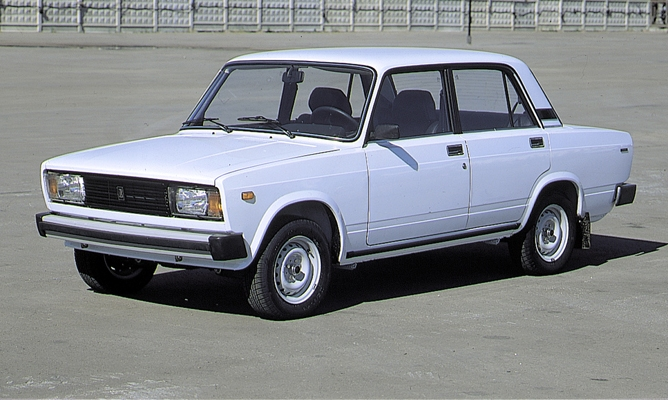

Bár az első darabok 1980-ban készültek el, a „kocka Lada” gyökerei jóval régebbre nyúlnak vissza, hiszen az 1970-ben bemutatott VAZ–2101 (Lada 1200, Zsiguli) felújított változataként jelent meg. A három variáns közül a VAZ–2105 volt az alap szedán, a VAZ–2104 annak a kombi változata, míg a VAZ–2107 a csúcskategóriás szedán. Utóbb könnyedén megkülönböztethető a 2105-től, nagyobb méretű és krómozott hűtőrácsa alapján. Oroszországban az autókat Pjatyorka (ötös), Csetvjorka (négyes) és Szemjorka (hetes) becenévvel illetik, míg Magyarországon a nullaöt, nullanégy és nullahét elnevezések a leggyakoribbak. A Lada kínálatában eltérő modellekként jelentek meg ezek a kocsik, de műszaki felépítésükben és formatervükben is szinte egyformák voltak. Elsőként a VAZ–2105 jelent meg, melynek műszaki adottságai nagyon hasonlóak voltak elődjéhez, a VAZ–2101-hez. Ugyanaz, a Fiattól származó négysebességes manuális sebességváltó került bele, ugyanúgy spirálrugók kerültek rá, a hátsó kerekekre pedig alumínium dobfékek. A motor alapjául is a 2101-es 1200 cm³-es erőforrása szolgált, de ez alaposan át lett alakítva. A régi OHC motorhoz képest ez 1300 cm³-esre bővült és vezérműlánc helyett vezérműszíj került rá. 1982-ben érkezett a nagyobb változat a VAZ–2107, mely az 1972-ben bemutatott VAZ–2103 1500 cm³-es, láncos OHC motorját örökölte. 1992-ben eszközöltek egy-két változást ezen a motoron, amikor néhány változat egypontos üzemanyag-befecskendezést és katalizátort kapott, így megpróbálva jobb besorolást kapni a károsanyag kibocsátási teszteken. Később a 2105 modernizált változata, a 2105-3 is 1500 cm³-es motort kapott. A szigorodó károsanyag kibocsátási és biztonsági szabályozások miatt 1997-re a legtöbb nyugat-európai országban beszüntették a "kocka Ladák" eladását, ennek ellenére a gyártás és az eladás zavartalanul folyt tovább Oroszországban. 2002-ben a VAZ–2104 gyártása áttevődött az Izsevszki Autógyárba (IzsMas),[10] majd később Ukrajnában, a Lucki Autógyárban és Cserkasziban is megkezdődött az összeszerelés. A VAZ–2107 össze szerelése a Zaporizzsjai Autógyárban (ZAZ) és az Egyiptomi Suzuki gyárban is folyt. 2011 augusztusában a "kocka Ladák gyártása Oroszországban teljes mértékben áttevődött az Izsevszki Gépgyárba.
